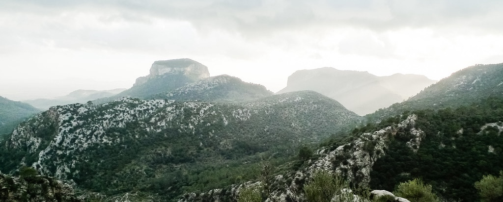

The Learning Workshop 2026
March 19 - March 21, 2026
Majorca, Spain
6th Annual Gathering
The Learning Workshop is a small gathering for researchers in machine learning (typically students, early-career professors, and industry professionals) to explore and exchange ideas.
This year’s workshop will be held in Majorca, Spain, from March 18–21, 2026, and will include about 12 attendees.
Past attendees have included researchers from industry labs such as Google DeepMind, OpenAI, the Allen Institute, Meta AI, and Waymo; and from universities such as Berkeley, Stanford, MIT, NYU, Princeton, Harvard, Oxford, Columbia, and CMU.
Format
Each attendee leads an hour-long session, typically comprised of 15 minutes of presentation from the session lead and 45 minutes of discussion and Q&A from the other attendees.
Guidelines
- Session topic: The focus of the workshop is to talk about ideas and ongoing work, rather than published work. Attendees are encouraged to select the session topic that they think would spark the most productive discussions.
- Quality: Sessions are expected to contribute to a high standard of discussion.
- Confidentiality: All conversations are off the record.
Organizers
This year the Learning Workshop is organized by John Hewitt,
Chris Lu,
Lisa Schut, and
Sam Sokota.
Previous Workshops & Attendees
- Chris Lu, OpenAI
- Eugene Vinitsky, New York University
- John Hewitt, Columbia University / Google DeepMind
- Lisa Schut, University of Oxford
- Lucio Dery, Google DeepMind
- Martin Arjovsky, Google DeepMind
- Sam Sokota, Carnegie Mellon University
- Sanjana Srivastava, Stanford
- Vaishnavh Nagarajan, Google
- Victoria Peterson, FIQ-UNL
- Yuqing Du, Google DeepMind
- Chris Lu, University of Oxford
- Clare Lyle, DeepMind
- Eugene Vinitsky, New York University
- Jonathan Frankle, Databricks
- Lisa Schut, University of Oxford
- Luke Metz, OpenAI
- Martin Arjovsky, DeepMind
- Michael Dennis, DeepMind
- Patrick Emedom-Nnamdi, Harvard University
- Rose Wang, Stanford University
- Sam Sokota, Carnegie Mellon University
- Will Whitney, DeepMind
- Yuqing Du, DeepMind
- Luke Metz, OpenAI
- Victoria Dean, Carnegie-Mellon University
- Abishek Das, Meta AI
- Jesse Dodge, Allen Institute for AI
- Jackie Kay, DeepMind
- Jonathan Frankle, Harvard University & Mosaic AI
- Clare Lyle, DeepMind
- Martin Arjovsky, DeepMind
- Eugene Vinitsky, New York University
- Will Whitney, DeepMind
- Emma Strubell, Carnegie-Mellon University
- Cinjon Resnick, New York University
- Shiori Sagawa, Stanford University
- Ishaan Gulrajani, Stanford University
- Tegan Maharaj, Vector Institute
- Patrick Emedom-Nnamdi, Harvard University
- Amy Zhang, UT Austin
- Amy Zhang, UT Austin
- Will Whitney, DeepMind
- Kelsey Allen, DeepMind
- Cinjon Resnick, New York University
- Martin Arjovsky, DeepMind
- Becca Roelofs, Google Brain
- Miles Cranmer, Flatiron Institute
- Jakob Foerster, Oxford University
- Jesse Dodge, Allen Institute for AI
- Kalesha Bullard, DeepMind
- Amlan Kar, Nvidia
- Allan Jabri, UC Berkeley
- Luke Metz, Google Brain
- Rosanne Liu, Google Brain
- Vincent Sitzmann, MIT
- Andres Campero, MIT
- Ishaan Gulrajani, Stanford University
- Xinyi Chen, Princeton University
- MH Tessler, DeepMind
- Jackie Kay, DeepMind
- Sophie Bridgers, MIT
- Will Whitney, New York University
- Natasa Tagasovska, EPFL
- Cinjon Resnick, New York University
- Amy Zhang, Facebook AI Research
- Martin Arjovsky, INRIA / École Normale Supérieure
- Greg Yang, Microsoft
- Jakob Foerster, Oxford University
- Andrés Campero, MIT
- Antonio Terán, MIT
- Tegan Maharaj, MILA
- Ishaan Gulrajani, Stanford University
- Candace Ross, MIT
- Luke Metz, Google Brain